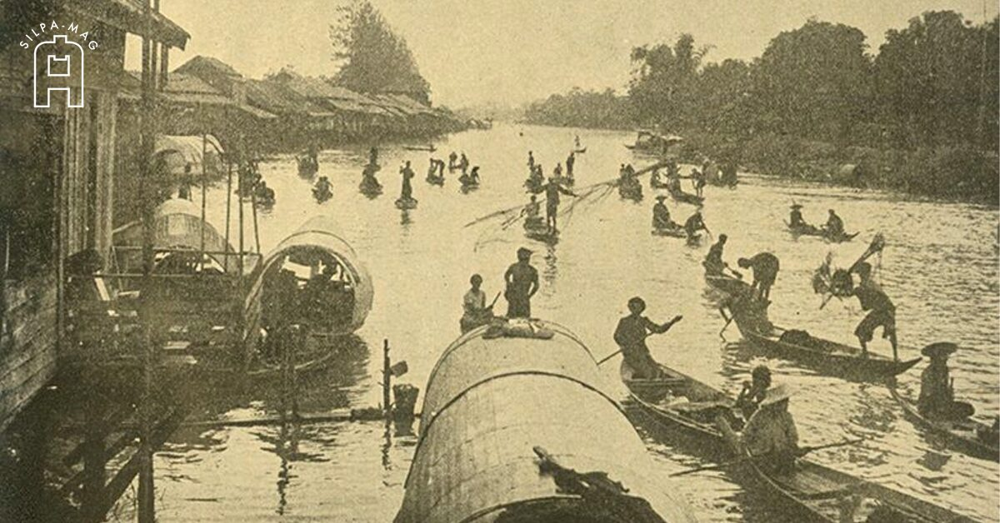

เศรษฐกิจและการค้า

ประชาชนส่วนใหญ่ประกอบอาชีพเกษตรกรรม มีการค้าขายทั้งภายในและกับเมืองอื่น ๆ สุโขทัยมีความอุดมสมบูรณ์และมีคำกล่าวว่า “ในน้ำมีปลา ในนามีข้าว”

ประชาชนส่วนใหญ่ประกอบอาชีพเกษตรกรรม มีการค้าขายทั้งภายในและกับเมืองอื่น ๆ สุโขทัยมีความอุดมสมบูรณ์และมีคำกล่าวว่า “ในน้ำมีปลา ในนามีข้าว”